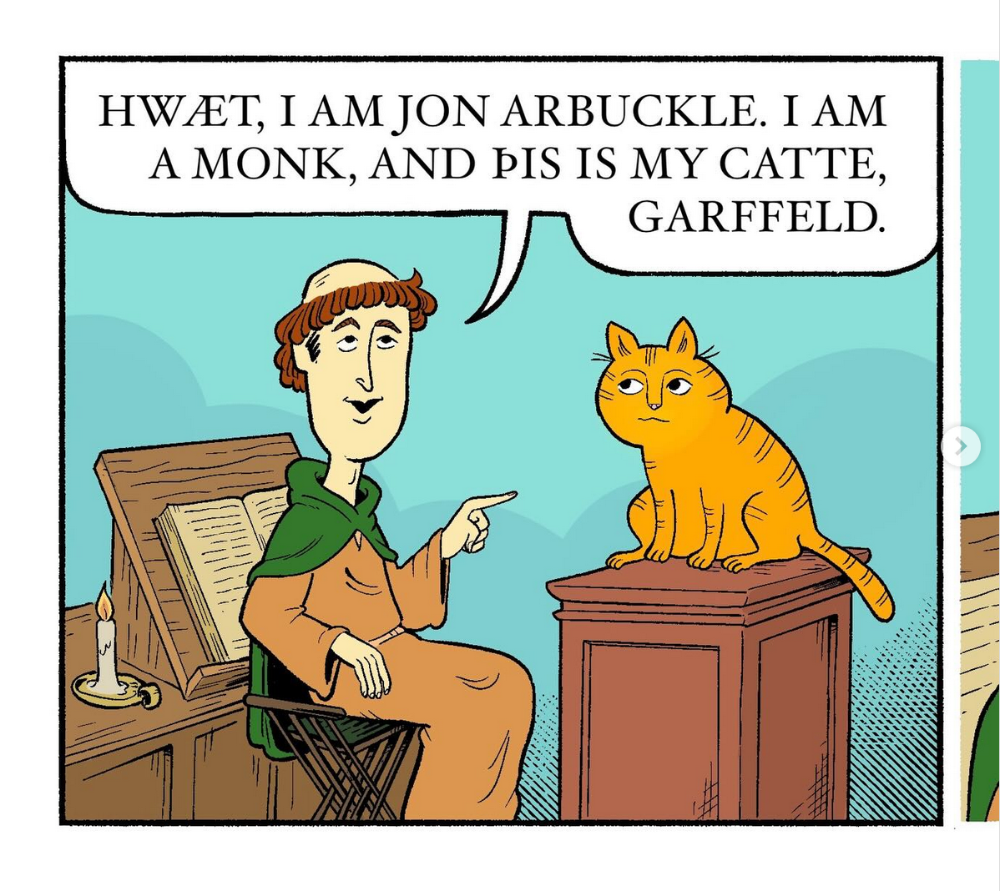

Computers were better when they were worse
A manifesto
Ever notice how there are only 3 websites anymore?
And they all just want to sell you things or take your attention
And they all just want to sell you things or take your attention
I am not nostalgic for all of the old Internet
But...
- Old internet was created by PEOPLE
- Not always trying to sell you things
- I want computers to be fun again thx
The lines are a lot more blurry now
- Doomscrolling
- Surveillance capitalism
- The dead internet
It's all part of the same stuff, and it all contributes to making THEM
richer. Who loses? We do.
You can do something about this!
Actually 3 things lol
Thing one(1)
- Participate in the smallweb
The smallweb is made up of pages that are simple, don't require tracking or cookies, and are made by indie creators.
The web has users, the smallweb has people.
"The web is also a creative and cultural space that need not confine itself to the conventions defined by commercial product design and marketing." -- https://smallweb.page/why
Read blogs (discover new blogs with https://bubbles.town, https://indieblog.page and https://blogofthe.day)
Join Mastodon (it's like twitter for weird people)
Use an RSS reader like Feedly or The Old Reader (free! the content just comes to you! what?!)
Thing 2 (two): Use fewer US-based services (sorry)
Some easy switches
| Gmail-> Proton Mail | Google-> Qwant or Kagi | Chrome-> Vivaldi |
omg
thing 3: social media is killing us
- a fitness influencer
- cheese ad
- standup comedian
- gym comedian
- gym ad (IG thinks I'm fat)
- Jerry Saltz post (cool guy, not my friend tho)
- a pretty good garfield parody (credit where credit is due)

- a cute video of a baby quail
- another ad
- I have no idea what this was https://www.instagram.com/katelinten/p/DaNv2QyHHqk/
- another ad
- another comedy reel
- at some point I disassociated and just kept scrolling but there were at least 5 more posts before
- FINALLY a post from someone I know personally